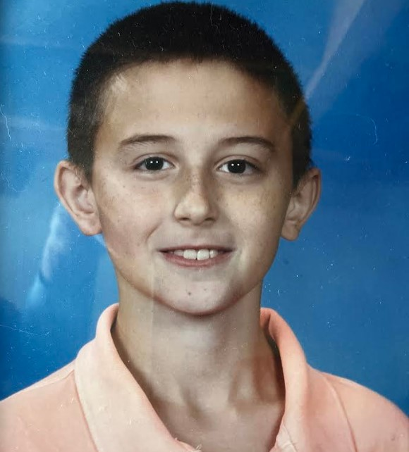

Welcome, it's wonderful to e-meet you.

2014
 2020
2020
 2025
2025
Hi! As you already know, I’m Steve — a Master’s student in Data Science at UW–Madison.
Being from small‑town Wisconsin, I carry with me the enduring values of hard work, discipline, and community — principles I strive to uphold as a reflection of my upbringing and the place I’m proud to call home.
During my undergraduate years, I spent most of my time conducting EEG and epilepsy research — publishing several preprints and developing a deep understanding of time‑series processing and applied machine learning. Alongside my interest in theoretical coursework, I built a foundation for strong analytical thinking and critical insight.
Now, I’m refining my practical engineering skillset: mastering distributed systems, diving deep into modern ML libraries, and sharpening my coding fluency every single day. I'm preparing for the next chapter — one where I join a visionary, collaborative team in a fast‑paced environment where ideas evolve quickly and impact runs deep.
Thanks for stopping by my corner of the galaxy.
Being from small‑town Wisconsin, I carry with me the enduring values of hard work, discipline, and community — principles I strive to uphold as a reflection of my upbringing and the place I’m proud to call home.
During my undergraduate years, I spent most of my time conducting EEG and epilepsy research — publishing several preprints and developing a deep understanding of time‑series processing and applied machine learning. Alongside my interest in theoretical coursework, I built a foundation for strong analytical thinking and critical insight.
Now, I’m refining my practical engineering skillset: mastering distributed systems, diving deep into modern ML libraries, and sharpening my coding fluency every single day. I'm preparing for the next chapter — one where I join a visionary, collaborative team in a fast‑paced environment where ideas evolve quickly and impact runs deep.
Thanks for stopping by my corner of the galaxy.